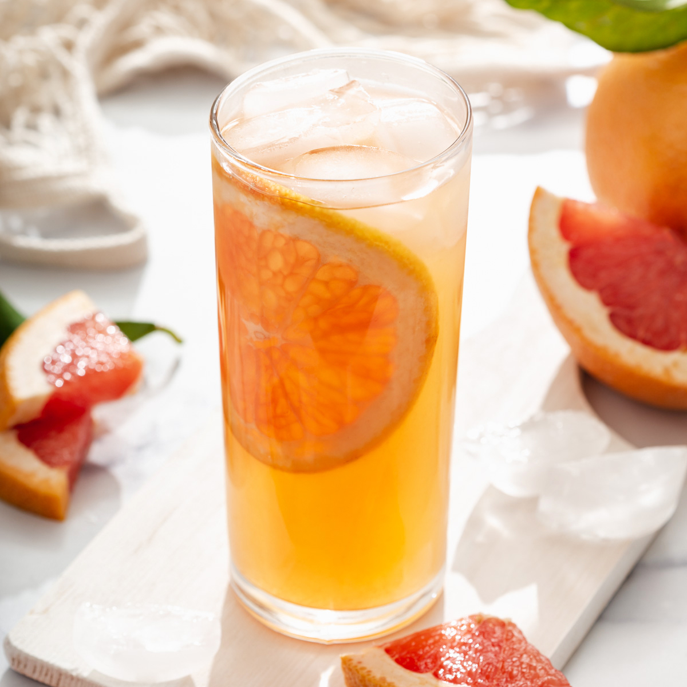

This grapefruit green tea has plenty of
pulpy grapefruit juice and green tea,
making it a really refreshing drink for summer!
- 2-3 grapefruit slices
- ice
- 1/2 cup grapefruit pulp and juice about 1/2 medium grapefruit
- pinch of salt
- 2 teaspoons maple syrup or to taste
- 1 1/2 cups brewed jasmine tea cold
- 1/8 teaspoon rosewater or to taste
- Gently fold the grapefruit slices and stick them to the inside of your glass.
-
Add a handful of ice to the glass.
Add everything, then stir to combine.
Adjust with more sweetener or rosewater to taste! Serve cold.